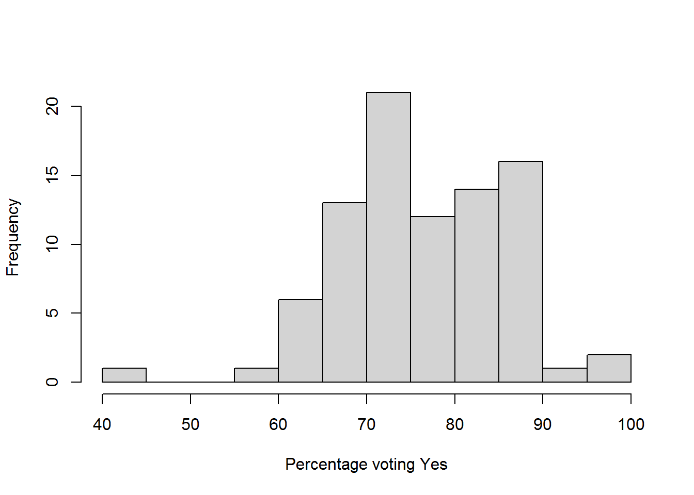
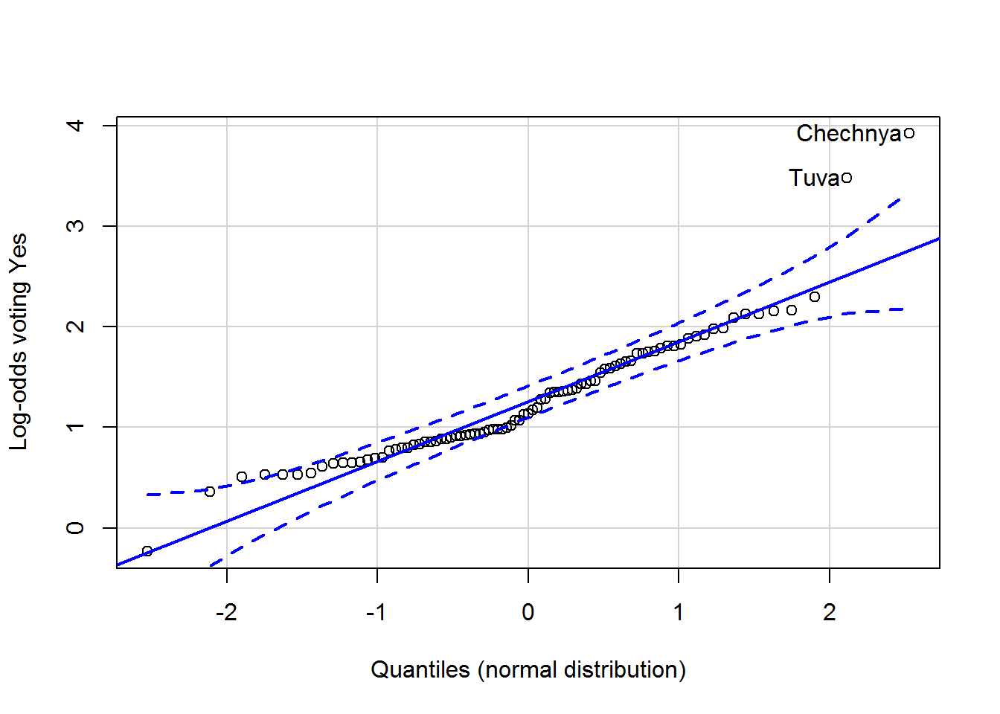
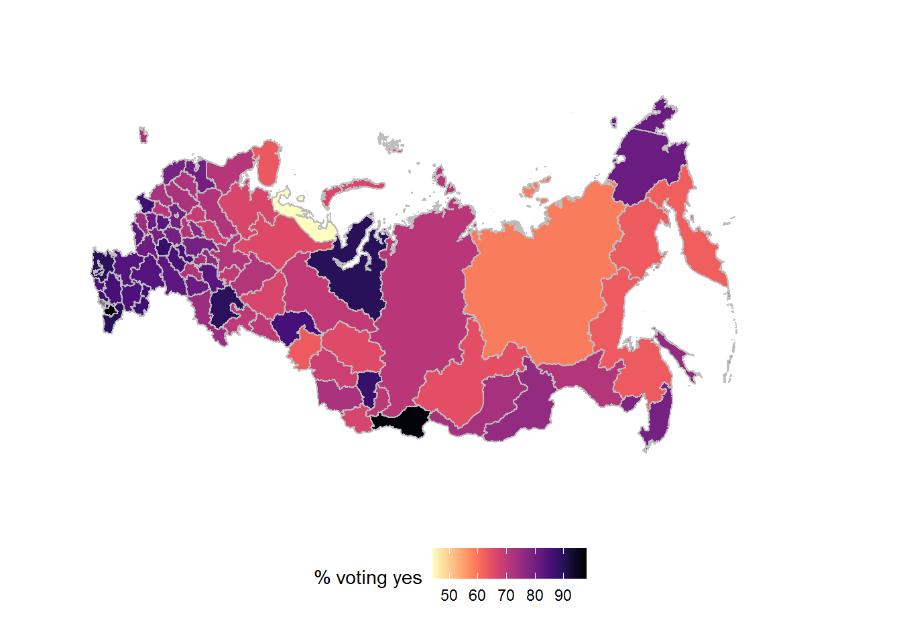

Using rvest to scrape the 2020 Russian constitutional referendum results from Wikipedia, do some sums, and plot them on a choropleth (raster and ggplot). The source is available here.
library(rvest)
library(car)
library(tidyverse)
library(kableExtra)
library(viridis)This uses a particular revision, not the latest page, so the table doesn’t shift if I rerun the code.
wp_page <- read_html("https://en.wikipedia.org/w/index.php?title=2020_Russian_constitutional_referendum&oldid=966242800")I got the xpath using the Chrome inspector (see, e.g., this page)
results <- wp_page %>%
html_node(xpath = '//*[@id="mw-content-text"]/div/table[10]') %>%
html_table(fill = TRUE)
names(results) <- c("Region", "Votes_Yes", "Perc_Yes", "Votes_No", "Perc_No")Have a look:
head(results)Remove an empty row and other stuff…
res_clean <- results %>%
subset(!Region %in% c("",
"Source: CEC",
"Region"))Remove the thousand separator commas.
res_clean %>%
mutate_at(vars(starts_with("Votes")),
~ gsub(",", "", .)) -> res_cleanNow transform all the numbers to numerics.
res_clean %>%
mutate_at(vars(!matches("Region")),
as.numeric) -> res_cleanRemove those percentages:
res_clean %>%
dplyr::select(-c(starts_with("Perc"))) -> res_cleanHave a peek:
View(res_clean)Total sums:
Total_Yes <- sum(res_clean$Votes_Yes)
Total_No <- sum(res_clean$Votes_No)Percentage voting for the changes.
Perc_Yes <- 100*Total_Yes / (Total_Yes + Total_No)
Perc_Yes## [1] 78.55816Compute the percentages again (more dp):
res_clean <- res_clean %>%
mutate(Perc_Yes = 100*Votes_Yes / (Votes_Yes + Votes_No))res_clean %>%
arrange(Perc_Yes) %>%
kable(align="lrrr", digits = 1)| Region | Votes_Yes | Votes_No | Perc_Yes |
|---|---|---|---|
| Nenets Autonomous Okrug | 9567 | 12074 | 44.2 |
| Yakutia | 204435 | 142464 | 58.9 |
| Kamchatka Krai | 65485 | 39406 | 62.4 |
| Omsk Oblast | 610278 | 360348 | 62.9 |
| Magadan Oblast | 34035 | 20090 | 62.9 |
| Khabarovsk Krai | 271421 | 159662 | 63.0 |
| Murmansk Oblast | 163735 | 95095 | 63.3 |
| Irkutsk Oblast | 529770 | 287131 | 64.9 |
| Tomsk Oblast | 223046 | 117232 | 65.5 |
| Baikonur | 4288 | 2248 | 65.6 |
| Komi Republic | 221113 | 115322 | 65.7 |
| Moscow | 2855547 | 1485963 | 65.8 |
| Arkhangelsk Oblast | 297432 | 150935 | 66.3 |
| Sverdlovsk Oblast | 1132182 | 565242 | 66.7 |
| Altai Republic | 55291 | 27433 | 66.8 |
| Novosibirsk Oblast | 698857 | 323674 | 68.3 |
| Kostroma Oblast | 180846 | 83044 | 68.5 |
| Yaroslavl Oblast | 374053 | 168930 | 68.9 |
| Russians abroad | 99852 | 44939 | 69.0 |
| Udmurtia | 455908 | 199121 | 69.6 |
| Khanty-Mansi Autonomous Okrug | 487750 | 212434 | 69.7 |
| Chelyabinsk Oblast | 1190097 | 505597 | 70.2 |
| Kurgan Oblast | 276378 | 117294 | 70.2 |
| Khakassia | 141381 | 59758 | 70.3 |
| Kaluga Oblast | 338748 | 140003 | 70.8 |
| Krasnoyarsk Krai | 848638 | 350687 | 70.8 |
| Republic of Karelia | 168389 | 68304 | 71.1 |
| Amur Oblast | 258548 | 103726 | 71.4 |
| Perm Krai | 734802 | 293643 | 71.4 |
| Kirov Oblast | 409702 | 163247 | 71.5 |
| Vologda Oblast | 388615 | 152983 | 71.8 |
| Ulyanovsk Oblast | 379056 | 148346 | 71.9 |
| Vladimir Oblast | 419606 | 164025 | 71.9 |
| Novgorod Oblast | 172997 | 66616 | 72.2 |
| Tver Oblast | 410421 | 155409 | 72.5 |
| Smolensk Oblast | 296792 | 111247 | 72.7 |
| Kaliningrad Oblast | 334755 | 125341 | 72.8 |
| Altai Krai | 645603 | 241132 | 72.8 |
| Buryatia | 329208 | 121205 | 73.1 |
| Chuvashia | 426779 | 154351 | 73.4 |
| Orenburg Oblast | 834406 | 286720 | 74.4 |
| Kursk Oblast | 389300 | 133471 | 74.5 |
| Zabaykalsky Krai | 352670 | 114010 | 75.6 |
| Sakhalin Oblast | 189466 | 60853 | 75.7 |
| Mari El | 251831 | 77884 | 76.4 |
| Ivanovo Oblast | 390256 | 117846 | 76.8 |
| Saint Petersburg | 2241963 | 624517 | 78.2 |
| Jewish Autonomous Oblast | 70213 | 19430 | 78.3 |
| Pskov Oblast | 231684 | 60626 | 79.3 |
| Lipetsk Oblast | 479670 | 124509 | 79.4 |
| Ryazan Oblast | 499716 | 129104 | 79.5 |
| Primorsky Krai | 723089 | 185629 | 79.6 |
| Moscow Oblast | 3488197 | 888794 | 79.7 |
| Nizhny Novgorod Oblast | 1505620 | 382801 | 79.7 |
| Leningrad Oblast | 817168 | 203833 | 80.0 |
| Voronezh Oblast | 1070045 | 256306 | 80.7 |
| Oryol Oblast | 372411 | 88970 | 80.7 |
| Samara Oblast | 1346254 | 312252 | 81.2 |
| Chukotka Autonomous Okrug | 18146 | 4203 | 81.2 |
| Belgorod Oblast | 798636 | 170172 | 82.4 |
| Saratov Oblast | 1187697 | 244989 | 82.9 |
| North Ossetia – Alania | 352314 | 71856 | 83.1 |
| Tatarstan | 1943685 | 389765 | 83.3 |
| Tula Oblast | 710765 | 138652 | 83.7 |
| Rostov Oblast | 2099202 | 400454 | 84.0 |
| Volgograd Oblast | 1222903 | 232524 | 84.0 |
| Karachay-Cherkessia | 211163 | 37367 | 85.0 |
| Kalmykia | 124265 | 21986 | 85.0 |
| Adygea | 236686 | 41043 | 85.2 |
| Sevastopol | 183296 | 31656 | 85.3 |
| Penza Oblast | 683244 | 114588 | 85.6 |
| Tyumen Oblast | 748290 | 122759 | 85.9 |
| Stavropol Krai | 1304638 | 213467 | 85.9 |
| Mordovia | 408380 | 65931 | 86.1 |
| Bryansk Oblast | 749749 | 114009 | 86.8 |
| Kabardino-Balkaria | 362739 | 53795 | 87.1 |
| Astrakhan Oblast | 463866 | 68087 | 87.2 |
| Kemerovo Oblast | 1522151 | 209742 | 87.9 |
| Tambov Oblast | 583972 | 80138 | 87.9 |
| Ingushetia | 152992 | 18972 | 89.0 |
| Bashkortostan | 2448685 | 292701 | 89.3 |
| Krasnodar Krai | 3219153 | 382712 | 89.4 |
| Yamalo-Nenets Autonomous Okrug | 265237 | 30605 | 89.7 |
| Dagestan | 1352732 | 155290 | 89.7 |
| Crimea | 1104730 | 111401 | 90.8 |
| Tuva | 175698 | 5426 | 97.0 |
| Chechnya | 712909 | 14132 | 98.1 |
hist(res_clean$Perc_Yes, main = "", xlab = "Percentage voting Yes")
Log-odds of voting…
qq_res <- qqPlot(qlogis(res_clean$Perc_Yes / 100), id = list(labels = res_clean$Region),
xlab = "Quantiles (normal distribution)",
ylab = "Log-odds voting Yes")
The CRAN version of raster didn’t work this end (error loading a DLL), so grab from github…
#library(devtools)
#install_github("rspatial/raster")… and load:
library(raster)Get the Russia country map:
ru <- getData("GADM", country = "RUS", level=1)Here are the region names in this map (first 10):
ru@data$NAME_1[1:10]## [1] "Adygey" "Altay" "Amur" "Arkhangel'sk"
## [5] "Astrakhan'" "Bashkortostan" "Belgorod" "Bryansk"
## [9] "Buryat" "Chechnya"They’re different to the names in the Wikipedia table. How do we match them…?
Fuzzy matching by edit distance…? This almost works for most of them but not quite…
distances <- adist(gsub("Oblast|Krai|Okrug|Autonomous",
"",
res_clean$Region),
ru@data$NAME_1)
rownames(distances) <- res_clean$Region
colnames(distances) <- ru@data$NAME_1Often the match is good or close. Other times not so close, e.g., “Sakha” and “Yakutia” are different names for the same place but aren’t the closest match by edit distance. So, time to export and fix manually:
write.csv(as.data.frame(distances), "distances.csv", row.names = T)I fiddled with this file outside R (using… Excel, for shame) and replaced the best match with -1. Reading in again:
region_match <- read_csv("fixed_distances.csv")## Parsed with column specification:
## cols(
## .default = col_double(),
## Region = col_character()
## )## See spec(...) for full column specifications.Okay, make a lookup table using a DIRTY for-loop:
wiki_region <- region_match$Region
GADM_region <- rep(NA, length(wiki_region))
for (r in 1:nrow(region_match)) {
row <- region_match[r,-1]
matching_index <- which(row == -1)
GADM_region[r] <- ifelse(length(matching_index) == 1,
colnames(row[which(row == -1)]),
NA)
}
matched_region_names <- data.frame(wiki_region, GADM_region)
rm(wiki_region, GADM_region, row, matching_index)Take a look:
View(matched_region_names)No matches for Baikonur (the cosmodrome), Crimea or Sevastopol (which are Ukraine), or “Russians abroad” (that ain’t no oblast).
for_merge <- matched_region_names
names(for_merge)[1] <- "Region"
for_map <- left_join(res_clean, for_merge)## Joining, by = "Region"Now select the bits we want to plot on a map - the region name and percentages:
for_map <- for_map %>%
dplyr::select(GADM_region, Perc_Yes)
names(for_map)[1] = "id"This was more complicated than surely it needs to be…
library(broom)
library(gpclib)
library(maptools)
library(mapproj)
gpclibPermit()## [1] TRUEru_df <- tidy(ru, region = "NAME_1")This doesn’t look good: “support for gpclib will be withdrawn from maptools at the next major release”.
But tidy worked:
head(ru_df)## # A tibble: 6 x 7
## long lat order hole piece group id
## <dbl> <dbl> <int> <lgl> <fct> <fct> <chr>
## 1 39.7 44.0 1 FALSE 1 Adygey.1 Adygey
## 2 39.7 44.0 2 FALSE 1 Adygey.1 Adygey
## 3 39.7 44.0 3 FALSE 1 Adygey.1 Adygey
## 4 39.7 44.0 4 FALSE 1 Adygey.1 Adygey
## 5 39.7 44.1 5 FALSE 1 Adygey.1 Adygey
## 6 39.7 44.1 6 FALSE 1 Adygey.1 AdygeyGlue the percentages on.
ru_df_vals <- left_join(ru_df, for_map)
ru_df_vals$region <- ru_df_vals$id # to prevent a message later...Finally, plot…!
ggplot(ru_df_vals, aes(long, lat)) +
geom_map(map = ru_df_vals,
aes(map_id = id, fill = Perc_Yes),
color = "gray",
show.legend = T) +
theme_void() +
theme(legend.position="bottom") +
coord_map("azequalarea") +
xlim(15,190) +
ylim(40,83) +
labs(fill = "% voting yes") +
scale_fill_viridis(option = "magma", direction = -1)
The xlim, ylim and coord_map options were helped along by a stack overflow comment.